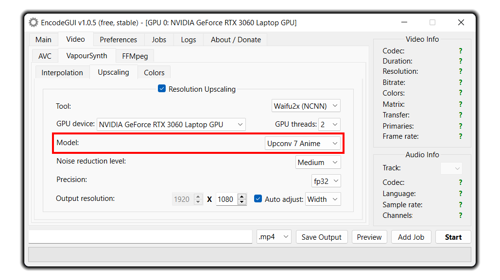

Resolution Upscaling & DeNoise
Resolution upscaling allows you to upscale videos from, say, 1080p to 4K. Upscaling videos is provided using either Waifu2x or SRMD. Both use NCNN as the graphics backend which is currently the fastest implementation for them. In Waifu2x, you can also configure the settings to DeNoise only without upscaling.
How to Use
Selecting a Tool
Waifu2x (NCNN):Provides up to 2x upscaling, hence the name. It’s one of the fastest AI resolution upscaling tools there is currently. DeNoising is also built into Waifu2x which you can use simultaneously while upscaling or as a stand-alone feature.
SRMD (NCNN):
This is an alternative upscaling option to Waifu2x which allows up to 4x upscaling, but the rendering speed can be about 2x slower than Waifu2x. DeNoising can also be used simultaneously with SRMD.
Selecting a GPU Device
Allows you to select a GPU device to use for upscaling. Select a Vulkan capable GPU in the list.Note: Please refrain from asking the developers if your GPU is Vulkan capable - we most likely don't know either. Please research on your own as the answer can be found easily as a simple web search.
Selecting GPU Threads
Here, you can set the number of GPU threads for the upscaling process to use. An all around good value to use is2 threads. More threads will not make the process faster and can throw errors if too many threads are used.Selecting AI Model (Waifu2x Only)

This section allows you to select an AI model for upscaling.Upconv 7 Anime:
This model is designed for anime films or 3D cartoons.
Upconv 7 Photo:
This model is designed for reality videos. Don't use this model for 2D videos.
Cunet:
This model is specifically designed for 2D videos. However, this model is also 2x slower than the models above.
DeNoise Only: This "model" allows you to only DeNoise the video without upscaling. It has the same speed as the
Cunet model.Selecting Noise Reduction Level
This option allows you to set the noise reduction level for the video. If your video has no noticeable noise, then you'll want to set this value toMedium in Waifu2x or 3-4 in SRMD. If your video has noticable noise, then you'll want to set this value to a higher selection.Selecting Color Precision (Waifu2x Only)
Color precision specifies the accuracy of the colors during the upscaling process.Fp32:
This is the recommended option. Fp32 is a high color precision level which allows a higher quality upscaling at the cost of a slight upscaling speed loss.
Fp16:
This option is faster than Fp32 and is suggested to use if you want a faster upscaling process and don't care so much about the quality of the colors in the video.
Using TTA (SRMD Only)
Test Time Augmentation (TTA) allows the upscaling to be more quality focused at the huge cost of upscaling speed. Since using TTA is so slow, it is generally not recommended to use.Selecting Output Resolution
Lastly is to set the output resolution. Keep in mind of the resolution upscaling limits in both Waifu2x and SRMD. Waifu2x only supports a maximum resolution of 2x the source video resolution whereas SRMD supports up to 4x. The default output resolution is set to maximum output resolution possible.Auto Adjust:
This setting allows EncodeGUI to automatically adjust either the output resolution width or height on the basis of user defined width or height in accordance with the video aspect ratio. You can disable this option so that you can set the width and height to be outside of the source video's aspect ratio.